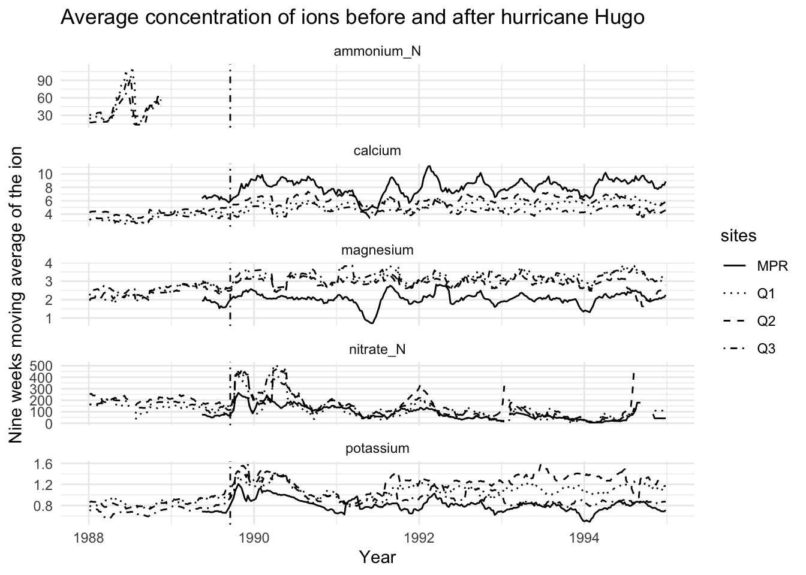

# Install packages
# Install only if you have not installed already
# install.packages("tidyverse")
# install.packages("janitor")Chemistry of watersheds from the Luquillo Mountains, Puerto Rico
Background
# Load packages
library(tidyverse)
library(janitor)
# Sourcing the moving average function from different .R script
source(here::here("R", "revised-func-watershed.R"))Data
# Read and clean data
# PRM = Puente Roto Mameyes (PRM)
PRM <- read_csv(here::here("data", "RioMameyesPuenteRoto.csv"),
na = c(" ", "NA")) %>%
clean_names() #clean data
# Quebrada uno-Bisley (QB1)
QB1 <- read_csv(here::here("data", "QuebradaCuenca1-Bisley.csv"),
na = c(" ", "NA")) %>%
clean_names() #clean data
# Quebrada dos-Bisley (QB2)
QB2 <- read_csv(here::here("data", "QuebradaCuenca2-Bisley.csv"),
na = c(" ", "NA")) %>%
clean_names() #clean data
# Quebrada tres-Bisley (QB3)
QB3 <- read_csv(here::here("data", "QuebradaCuenca3-Bisley.csv"),
na = c(" ", "NA")) %>%
clean_names() #clean data# Combine four data sets into one data frame
watersheds_combined <- rbind(PRM, QB1, QB2, QB3)
# Intermediate output, detail list of all datasets
saveRDS(watersheds_combined, "watersheds_combined.rds")# Create a new data frame
watersheds <- watersheds_combined %>%
rename(sites = sample_id) %>%
#only selecting the column that requires computation
select(sites, sample_date, no3_n, k, mg, ca, nh4_n) %>%
#add a new column and change the sample dates into year for plotting, this is optional
mutate(year = year(sample_date)) %>%
#relocating the newly added column next to the sample dates
relocate(year, .after = sample_date)
# Intermediate output, selected columns for computing moving average
saveRDS(watersheds, "watersheds.rds")Methods
# Calculating moving average for nitrate_N, potassium, magnesium, calcium, ammonium_N
watersheds_grouping <- watersheds %>%
group_by(sites) %>% # grouping by the sites
mutate(nitrate_N = sapply(sample_date, moving_average,
dates = sample_date, conc = no3_n, win_size_wks = 9)) %>% #add new column and calculate moving average for nitrate_N
mutate(potassium = sapply(sample_date, moving_average,
dates = sample_date, conc = k, win_size_wks = 9)) %>% #add new column and calculate moving average for potassium
mutate(magnesium = sapply(sample_date, moving_average,
dates = sample_date, conc = mg, win_size_wks = 9)) %>% #add new column and calculate moving average for magnesium
mutate(calcium = sapply(sample_date, moving_average,
dates = sample_date, conc = ca, win_size_wks = 9)) %>% #add new column and calculate moving average for calcium
mutate(ammonium_N = sapply(sample_date, moving_average,
dates = sample_date, conc = nh4_n, win_size_wks = 9)) #add new column and calculate moving average for ammonium_N# Create a data frame for the ggplot!
watersheds_ma <- watersheds_grouping %>%
# select columns of interest for reshaping
select(sites, sample_date, year, nitrate_N, potassium, magnesium, calcium, ammonium_N) %>%
# reshape table from wide to long
pivot_longer(cols = c("nitrate_N", "potassium", "magnesium", "calcium", "ammonium_N"),
names_to = "ion", # give column name for variable
values_to = "moving_avg_value") %>% # give column name for values
filter(year >= 1988, year <= 1994) # choose the year of interest for computing
# Intermediate output, data frame for ggplot
saveRDS(watersheds_ma, "watersheds_ma.rds")Results
# Create a ggplot!
ggplot(data = watersheds_ma, aes(x = sample_date, y = moving_avg_value, linetype = sites)) +
geom_line(na.rm = TRUE) +
facet_wrap(~ion,
scales = "free_y",
ncol = 1) +
geom_vline(xintercept = as.Date("1989-09-18"),
colour="black",
linetype = "dotdash") +
labs(title = "Average concentration of ions before and after hurricane Hugo",
x = "Year",
y = "Nine weeks moving average of the ion") +
theme_minimal() +
scale_linetype_manual(values = c("solid", "dotted", "dashed", "dotdash"))
# Save ggplot
ggsave(here::here("figs", "avg_conc.jpg"))